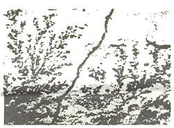
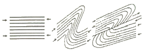
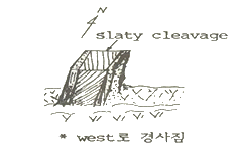
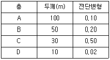
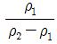
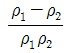
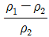
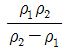
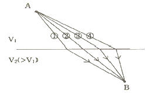

응용지질기사 (2005-08-07 기출문제)
1과목: 암석학 및 광물학
1. 라브라도라이트 사장석 표면에서 관찰되는 라브라도리슨스 효과의 원인은?
- 원자 층에서 일어나는 빛의 회절효과
- 알바이트 사장석과 경계에서 일어나는 빛의 간섭효과
- 신선한 광물표면에서 일어나는 빛의 반사효과
- 취편쌍정 경계에서 일어나는 빛의 간섭효과
(정답률: 60%)

2. 결정은 성장하면서 일정한 모습을 가지게 되는데, 결정 또는 결정집합체가 나타나는 일반적인 모양을 정벽(habit)이라 한다. 아래 그림은 망간광물에서 흔히 관찰되는 고사리 모양의 정벽인데 어떤 종류의 정벽인가?

- 주상
- 운모상
- 포도상
- 수지상
(정답률: 50%)
3. 어떤 한 결정이 결정축 a, b, c를 각각 표축비의 2, 3, 1 배수로 절단할 때 이를 바이스(Weiss) 기호로는 {2a : 3b : 1c}로 나타내는데, 이 결정면의 밀러(Miller)지수는?
- ( 1 2 0 )
- ( 2 1 3 )
- ( 3 2 6 )
- ( 2 3 1 )
(정답률: 50%)
4. 다음 중 탄산염광물로 조합된 것은?
- 인회석 - 석고
- 갈철석 - 석류석
- 경석고 - 방해석
- 돌로마이트 - 마그네사이트
(정답률: 64%)
5. 다음 광물 중에서 휘석군(pyroxene)에 속하는 것은?
- 앤소필라이트(anthophyllite)
- 녹니석(chlorite)
- 오자이트(augite)
- 포스터라이트(forsterite)
(정답률: 40%)
6. 다음 광물들은 철 화합물인데 화학적 분류에 있어서 상이한 것이 있다. 어느 것인가?
- 백철석
- 적철석
- 티탄철석
- 자철석
(정답률: 50%)
7. 다이아몬드의 구성원소가 취하고 있는 원자결합방식은?
- 공유결합
- 금속결합
- 이온결합
- 잔류결합
(정답률: 60%)
8. 어떤 광물의 경도가 석영보다는 약하고 정장석 보다는 강하다면 이 광물의 경도로 적절한 것은? (단, mohs 경도계를 기준)
- 5.5
- 6.5
- 7.5
- 8.5
(정답률: 62%)
9. 다음 전성이 가장 좋은 광물은 무엇인가?
- 백운모
- 자연금
- 석고
- 펙톨라이트
(정답률: 70%)
10. 다음 중 동위원소에 대한 설명으로 맞는 것은?
- 원자번호는 같지만 양성자수가 서로 다른 원소
- 원자번호는 다르지만 양성자수가 서로 같은 원소
- 원자번호는 같지만 질량수가 서로 다른 원소
- 원자번호는 같지만 전자수가 서로 다른 원소
(정답률: 54%)
11. 다음 중 변성광물이 아닌 것은?
- 해록석(glauconite)
- 십자석(stairolite)
- 남정석(kyanite)
- 근청석(cordierite)
(정답률: 50%)
12. 반려암과 섬록암을 나누는 기준으로 맞는 것은?
- An ＞ 50이면 반려암
- CaO ＞ 10%이면 반려암
- Fo ＞ 50이면 섬록암
- FeO ＞ 10%이면 섬록암
(정답률: 알수없음)
13. 다이아몬드를 산출하는 초염기성암은 다음 중 어느 것인가?
- 듀나이트(dunite)
- 킴벌라이트(kimberlite)
- 페리도타이트(peridotite)
- 사문암(serpentinite)
(정답률: 50%)
14. 지구진화의 초기에 지구대기 중 산소의 함량이 낮았음을 지시하는 증거는 다음 중 어느 것인가?
- 장석질 사암
- 철광상
- 인광상
- 암염
(정답률: 알수없음)
15. 야외에서 채취한 화성암을 석리(石理)에 따라 분류할 때 화산암에 해당하는 사항은?
- 조립이며 완정질인 것
- 반상인 것
- 치밀하며 비정질인 것
- 반정인 것
(정답률: 알수없음)
16. 제주도를 형성하고 있는 화성암체의 산상은?
- 저반
- 용암류
- 암맥
- 암주
(정답률: 65%)
17. 셰일(shale)과 이암(mudstone)과 다른 점은?
- 셰일은 이암보다 장석의 함량이 많다.
- 셰이은 이암보다 입자의 크기가 크다.
- 셰일은 이암보다 탄질물을 많이 포함한다.
- 셰일은 이암보다 잘 쪼개지는 성질이 있다.
(정답률: 37%)
18. 상하로 인접한 두 지층 사이에 커다란 시간적 간격을 나타내 주는 퇴적구조는?
- 사층리
- 건열
- 연흔
- 부정합
(정답률: 65%)
19. 변성상 평형도에 대한 다음 설명 중에서 틀린 것은?
- 평형 상태에서 공존선은 교차되지 않는다.
- ACF도는 변성 염기성암과 불순한 석회질암에 포한된 광물 조합은 도시하기 위해 사용되는 삼각도 이다.
- AFM도는 AKFM 4성분계 도면에서 유래되었다.
- CFM도는 변성산성암의 상변화를 도시하는데 유용하다.
(정답률: 27%)
20. 석회질 암석내에 석영과 점토광물이 불순물로 포함되어 있을 때, 이 암석이 변성작용을 받으면 새로운 광물들이 생성되면서 기체를 방출한다. 이때 방출될 수 있는 기체는?
- 오존(O3)
- 아르곤(Ar)
- 메탄(CH4)
- 이산화탄소(CO2)
(정답률: 67%)
2과목: 구조지질학
21. 암석에 생기는 절리의 특성이 아닌 것은?
- 융기작용이나 삭박작용 동안에 발생할 수 있다.
- 습곡작용과 관련하여 규칙적으로 발달할 수 있다.
- 인장응력 또는 전단응력에 의해 생긴다.
- 변성작용에 의해 생긴다.
(정답률: 62%)
22. 다음 그림은 어떤 단층의 생성과정을 나타낸 그림인가?

- 정단층
- 오버드러스트
- 점완단층
- 성장단층
(정답률: 60%)
23. 다음 중 조륙운동에서 융기의 증거와 관계 없는 것은?
- 이탈리아 세라피스 사원의 대리석 기둥에서 해저생물인 보오링셀의 자국이 있다.
- 해저삼림이 있다.
- 해안단구와 하안단구가 있다.
- 높은 산위에 해성퇴적암인 석회암층이 있다.
(정답률: 58%)
24. 다음 그림과 같은 노두에서 관찰한 Slaty cleavage로 해석한 구조 중 가장 옳은 것은?

- monocline
- 동쪽에 syncline구조가 있고, 이 습곡은 남쪽으로 plunge한다.
- 동쪽에 syncline구조가 있고, 이 습곡은 북쪽으로 plunge한다.
- 서쪽에 syncline구조가 있고, 이 습곡은 남쪽으로 plunge한다.
(정답률: 55%)
25. 다음 중 빙하와 관계가 깊은 것은?
- Rias식 해안
- Karst 지형
- Fiord
- 악지지형(惡地地形)
(정답률: 알수없음)
26. Anticlinorium이란 다음 중 어떠한 지질구조를 의미하는 가?
- 다수의 습곡이 대규모의 향사를 이루고 있는 지질구조
- 주경사의 방향으로 습곡축들이 발달하는 지질구조
- 다수의 습곡이 대규모의 배사를 이루고 있는 지질구조
- 습곡과 단층이 반복하는 지질구조
(정답률: 67%)
27. 규모 7의 지진은 규모 4의 지진보다 얼마나 더 많은 에너지를 방출하는가?
- 약 30배
- 약 3배
- 약 27000배
- 약 1000배
(정답률: 알수없음)
28. 해양저 확장설(sea-floor spreading)의 가장 중요한 증거가 된 것은 해양지각의 자기이상대 무늬의 발견과 해석에서 비롯되었다고 한다. 해양저 확장의 가장 직접적인 증거가 된 것은 이러한 자기이상대의 어떠한 특성 때문인가?
- 특이한 무늬모양
- 전-부의 반복적인 자기이상
- 해양지각 암석의 자화
- 자기이상대의 대칭성
(정답률: 73%)
29. 다음에 나열된 동위원소들 중 가장 젊은 지질연대를 측정할 수 있는 것은?
- 87Rb → 87Sr
- 238U → 206Pb
- 235U → 207Pb
- 14C → 14N
(정답률: 64%)
30. 호상열도(弧狀列島)에서 일어나는 화성활동의 특징이 되는 것은?
- 안산암질(安山岩質) 마그마 활동이 빈번하다.
- 화강암질의 관입이 활발하다.
- 혼성암(混成岩)의 발달이 빈번하다.
- 초염기성암의 발달이 격심하다.
(정답률: 알수없음)
31. 압쇄암에 대한 설명 중에서 틀린 것은?
- 압쇄암은 지하 심부에서 형성된 단층암이다.
- 압쇄암은 압쇄엽리를 가지며 압쇄된 정도에 따라 protomylonite, mylonite, ultramylonite 등으로 구분한다.
- 압쇄암은 야외에서 관찰한 때 압쇄정도에 따라 마치 편마암이나 편암같아 보이는 암석이다.
- 압쇄암은 심한 재결정작용을 받아 형성된 암석으로 접촉변성암이다.
(정답률: 62%)
32. 수계발달 특성 중 기반암의 지질구조에 의한 것이 아닌 것은?
- 평행 수계(parallel drainage)
- 격자상 수계(trellis drainage)
- 장방형 수계(rectangular drainage)
- 수지상 수계(dendritic drainage)
(정답률: 알수없음)
33. 다음 표는 4개 층의 두께와 각 층의 전단 변형(shear strain)을 보여준다. 전체 A,B,C,D 층에 대한 평균 전단변형은 얼마인가?

- 35.28
- 15.12
- 7.55
- 0.19
(정답률: 50%)
34. 다음 중 하곡의 발달에 영향을 미치는 요소가 아닌 것은?
- 사면 경사의 점도
- 강수량을 좌우하는 기후
- 침식에 대한 저항성을 규정하는 지질구조
- 퇴적물의 공급방향
(정답률: 59%)
35. 다음 중 천발, 중발, 심발지진이 모두 발생하는 곳은?
- 중앙해령
- 변환단층
- San andreas 단층
- 섭입대
(정답률: 60%)
36. 미국의 알버타주와 아리조나주에 걸쳐 넓게 발달하는 우식 및 토양침식에 의한 지형으로 우곡이 무수히 패여서 형성된 거친 지형의 명칭은?
- 메사(mesa)
- 에스카프먼트(escarpment)
- 약지(badland)
- 뷰트(butte)
(정답률: 55%)
37. 지구 구조론(Global tectonics)에서 지구표면하에 위치하는 암석권(Lithosphere)의 두께는 얼마나 되는가?
- 약 10km
- 약 100km
- 약 2600km
- 약 2200km
(정답률: 54%)
38. 현재 일본에서 활발한 지진활동의 원인은?
- 태평양판이 유라시아 판 하부로 섭입
- 화산활동
- 인도판과 유라시아판의 충돌
- 일본은 주로 퇴적암으로 이루어져 있기 때문
(정답률: 70%)
39. 대규모 지진의 발생시 함께 발달할 수 있는 지표 현상이 아닌 것은?
- 사태(Landsliding)
- 슬럼핑(slumping)
- 토석류(earth flow)
- 포행(creep)
(정답률: 83%)
40. 우리나라의 지층명과 지질시대가 잘못 짝지워진 것은?
- 풍촌층 - 고생대 캠브리아기
- 연일층군 - 신생대 마이오세
- 신동층군 - 중생대 백악기
- 만항층 - 고생대 오오도비스기
(정답률: 55%)
3과목: 탐사공학
41. 방사능 탐사의 대상 중 가장 거리가 먼 것은?
- 우라늄 탄광
- 지하수
- 단층
- 황화광물체
(정답률: 28%)
42. 길이가 같은 두 개의 단진자가 각각 A, B 두지점에 있다. 두 단진자의 주기를 측정한 결과 A, B 지점에서 각각 T, 2T 였다고 하면 A, B점의 중력값과의 관계는?
- A 지점이 B지점의 2배
- A 지점이 B지점의 1/2배
- A 지점이 B지점의 4배
- A 지점이 B지점의 1/4배
(정답률: 60%)
43. 다음 중 시간영역유도분극탐사와 관련이 없는 것은?
- V1/V2(V1=잔류전압, V2=정상전압 )
- 감쇠시간적분(decay-time integral)
- 충전성(chargeability)
- 위상차(phase difference)
(정답률: 55%)
44. 다음 중 유도분극(IP)탐사에서 주파수 효과란? (단, ρ1은 낮은 주파수 혹은 직류 겉보기 비저항이고, ρ2는 높은 주파수 혹은 교류 겉보기 비저항이다.)




(정답률: 46%)
45. 지하수 탐사에 가장 많이 사용되는 물리탐사 방법은?
- 중력탐사
- 자력탐사
- 탄사파탐사 반사법
- 전기비저항탐사
(정답률: 47%)
46. 지하자원 탐사에 이용되는 부분의 중력계(gravitimeter)에 있어서 측정되는 중력장은 구체적으로 무엇인가?
- 지오이드(geoid)
- 중력포텐셜(gravitational potential)
- 절대중력(absolute gravity)
- 상대중력(relative gravity)
(정답률: 24%)
47. 다음 지열의 특성에 대한 설명 중 맞지 않는 것은?
- 열전도도는 화강암 보다 자철석이 더 높다.
- 지열유량은 제 3기 조산대보다 선캠브리아기의 순상지가 더 높다.
- 지구 내부의 열 에너지원은 대부분 방사성 동위원소의 붕괴로 알려져 있다.
- 대양에서의 지열발산이 대륙 쪽 보다 더 넓게 분포한다.
(정답률: 43%)
48. 우리나라에서 주향이 남-북(NS)방향인 지질구조에 대하여 VLF 전자탐사를 실시하고자 한다. 이때 어느 송신소를 선택해야 가장 효과 적이겠는가?
- NAA
- NDT
- NPM
- NWC
(정답률: 58%)
49. 자력탐사의 물리량 측정단위는 다음 중 어느 것인가?
- Gauss
- gal
- simens/m
- ohom-m
(정답률: 37%)
50. 그림과 같이 아주층의 속도가 상부층의 속도보다 큰 구조에서 A지점에서 B지점까지 탐성파가 전달될 때의 파의 전파 경로는 어느 것인가?

- ①번 경로
- ②번 경로
- ③번 경로
- ④번 경로
(정답률: 60%)
51. GPR탐사에 대한 설명 중 잘못된 것은?
- 고해상도의 물리탐사방법이다.
- 가탐심도가 작으므로 주로 천부조사에 적용된다.
- 수 십 MHz 이상의 고주파를 사용한다.
- 일반적으로 굴절법이 가장 널리 사용된다.
(정답률: 50%)
52. Pb - Zn - Ag 광상의 지시 원소로 적합한 것은?
- As
- Hg
- Rn
- SO4
(정답률: 55%)
53. 상부층의 P 파 속도는 1,500m/s이며 밀도는 2.00g/cm3 이고, 하부층의 P 파 속도는 4,500m/s이며 밀도는 2.60g/cm3 이다. 반사계수와 투과 계수는 얼마인가?
- 반사계수 : 0.41, 투과계수 : 0.59
- 반사계수 : 0.49, 투과계수 : 0.51
- 반사계수 : 0.51, 투과계수 : 0.49
- 반사계수 : 0.59, 투과계수 : 0.41
(정답률: 50%)
54. 다음 중 지표 탄성파 반사법 자료처리 과정이 아닌 것은?
- CDP 중합(common depth point stacking)
- 뮤팅(Muting)
- 초동발췌(first arrival time picking)
- NMO(normal move-out)
(정답률: 56%)
55. 다음 중 중력참사 결과를 해석할 때 양의 중력이상을 나타내는 지질구조는?
- 암염돔 구조
- 해구
- 열곡대
- 염기성 암석
(정답률: 50%)
56. 물리탐사 측정기기 중 강자성체의 자기 포화 특성을 이용하여 자기장을 측정하는 기기는 무엇인가?
- 핵 자력계
- 플럭스게이트
- 포테클리노미터
- 스퀴드자력계
(정답률: 55%)
57. 다음 중 중력 참사에 있어서 측정과 기준면사이의 물질에 대한 보정방법으로 맞는 것은?
- 위도보정
- 푸리-에어 보정
- 부게보정
- 지형보정
(정답률: 40%)
58. 48channel의 수진기를 이용하여 CMP(common mid point) 모음 방법을 통하여 탄성파 자료를 획득하고자 한다. 수진기 간격은 40m, 음원간의 각도는 40m 라고 할때, 공통반사점을 가지는 트레이스의 수(CMP 수)는 얼마인가?
- 24
- 36
- 48
- 60
(정답률: 30%)
59. 화학원소의 지구화학적 분류에서 쉽게 이온화되어 이온결합의 경향이 높은 원소들이 주로 속하는 분류는?
- 친철(siderophile)원소
- 친동(chalcophile)원소
- 친석(lithophile)원소
- 친기(atmophile)원소
(정답률: 알수없음)
60. 다음 무질 중 대자율이 가장 큰 것은?
- 자철석
- 석탄
- 갈철석
- 화강암
(정답률: 46%)
4과목: 지질공학
61. 피암대수층을 가장 올바르게 설명한 것은?
- 포화된 대수층 상부에 두터운 불투수층이 있어 지하수가 구속을 받는다.
- 포화된 대수층 상하부에 불투수층이 피복되어 지하수가 심한 압력을 받는다.
- 유역상류로부터 유동되는 지하수의 압력을 받아 피압현상을 받는 지층이다.
- 포화된 지하수가 유역하류에 불투수층이 높여 흐름을 저지할 때 피압현상을 일으키는 지층이다.
(정답률: 알수없음)
62. 지질구조가 댐구축시 미치는 영향이 아닌 것은?
- 단층파쇄대가 있는 경우 파이핑 현상이 일어날 수 있다.
- 중력댐기초에 단층이 있는 경우 침투수에 의한 부양력이 문제가 될 수있다.
- 습곡의 향사구조상의 댐기초는 배사구조상의 댐기초보다 적응 부양력이 예상된다.
- 습곡의 배사구조보다 향사구조에서 측면 슬라이딩에 있어서는 더 안전하다.
(정답률: 70%)
63. 암질평가에는 R.Q.D가 보편적으로 적용된다. 암질이 양호(good)로 판정되는 R.Q.D범위(%)는 다음 중 어느것인가?
- 25~50
- 59~70
- 75~90
- 90~100
(정답률: 50%)
64. 어떤 점토시료를 일축 압축 시험한 결과, 압축 강도가 1.2kg/cm2, 파괴면과 수평면이 이루는 각은 47° 였다면 시료의 점착력은?
- 0.56kg/cm2
- 1.56kg/cm2
- 2.56kg/cm2
- 3.56kg/cm2
(정답률: 10%)
65. 다음 중 산사태 및 사면붕괴 문제 해결을 위한 공학적 설계에서 가장 중요하게 다루어져야 하는 것은?
- 일축압축강도
- 탄성계수
- 마찰각
- 탄성파속도
(정답률: 65%)
66. 다음 중 실내 투수 시험법은?
- Tube법
- Auger법
- 정수위 투수시험법
- Piezometer법
(정답률: 60%)
67. 그림과 같은 토양 컬럼 실험에서 토양A의 투수계수(KA)는 3×10-3cm/sec 이고, 두께는 70cm이다. 또한 토양 B의 투수계수(KB)는 2×10-3cm/sec 이고, 두께는 30cm이다. 토양A와 토양 B의 연직방향 평균 투수계수(KV)는 얼마인가? (문제 오류로 문제 및 보기 내용이 정확하지 않습니다. 정확한 내용을 아시는 분께서는 오류신고를 통하여 내용 작성 부탁드립니다. 정답은 2번입니다.)
- 2.50×10-3cm/sec
- 2.61×10-3cm/sec
- 2.70×10-3cm/sec
- 2.87×10-3cm/sec
(정답률: 20%)
68. 터널 외형 단면보다 약간 큰 단면을 가지는 튼튼한 강재의 통을 지반중에 밀어넣고 진행시켜 그 선단부 지반의 붕괴를 막으면서 굴착하는 방법은?
- 침매공법
- 실드공법
- 개착공법
- 언더피닝공법
(정답률: 46%)
69. 다음 중 단열암반에 설치된 시추공으로부터 얻을 수 있는 자료에 해당되지 않는 것은?
- 단열주향
- 단열경사
- 단열크기
- 단열간격
(정답률: 32%)
70. 다음 중 동다짐(Dynamic compaction)공법에 대한 설명으로 틀린 것은? (다)
- 전력설비가 없는 곳에서의 시공이 가능하다.
- 지지력의 소폭적인 증가가 요구될 때 효과적이다.
- 주변의 흙이 교란되지 않고 소음이 적다.
- 낙하고 조절이 가능하여 강력한 에너지를 얻을 수 있다.
(정답률: 55%)
71. 어떤 현장 모래의 습윤밀도와 함수비를 측정한 결과 각각 1.80g/cm3와 32.0%였다면 건조밀도는? (단, 흙 입자의 비중은 2.56)
- 1.⑤g/cm3
- 1.36g/cm3
- 2.65g/cm3
- 2.80g/cm3
(정답률: 20%)
72. 굴착 공사중에 발생하는 지하수의 처리공법으로 적절치 않은 것은?
- 디프웰(deep well)공법
- 웰포인트(well point)공법
- 피트(pit)공법
- 프리로딩(pre loading)공법
(정답률: 62%)
73. 수압파쇄법의 설명으로 틀린 것은?
- 수직응력은 암반의 단위중량과 심도의 곱으로 구한다.
- 이 시험에 의해 암반의 인장강도를 구할 수 있다.
- 수압에 의한 균열의 발달은 최대 주응력방향이다.
- 시 시험법은 암반의 변형계수를 구하기 위한 시험이다.
(정답률: 24%)
74. 다음 중 풍화(weathering)에 대한 설명으로 틀린것은?
- 건조하거나 추운 지역에서보다 열대지방이 풍화가 더 잘 일어난다.
- 고온에서 생성된 광물들은 저온에서 정출 된 광물들에 비해 더 쉽게 풍화된다.
- 지표 환경과 비슷한 퇴적암이 화성암과 비교할 때 풍화에 약하다.
- 비가 많은 열대지방에서 고령석이 가수분해되면 보옥사이트가 된다.
(정답률: 60%)
75. 지표 근처에 연약 점토층에 부분적으로 분포된어 있는 경우 적용할 수 있는 지반개량공법으로 가장 적당한 것은?
- 바이브로플로테이션공법
- 지하수위저하공법
- 굴착치환공법
- 동압밀공법
(정답률: 알수없음)
76. 극한평형조건을 이용하여 해석 할 수 없는 암반사면의 파괴 형태는?
- 평면파괴
- 전도파괴
- 쐐기파괴
- 원호파괴
(정답률: 37%)
77. 흙의 부피가 팽창하여 지표면이 부풀어 오르는 현상을 동상(frost heave)이라고 한다. 다음 중 동상이 가장 잘 읽어나는 흙은 어느거인가?
- 실트
- 자갈
- 모래
- 점토
(정답률: 40%)
78. 다음 중 콘크리트 댐에 속하지 않는 것은?
- 중력댐(gravity dam)
- 아취댐(arch dam)
- 부벽댐(butteress dam)
- 사력댐(earth dam)
(정답률: 63%)
79. 암석의 풍화 정도를 측정하기 위한 지수 시험법으로 적당한 것은?
- 전단시험
- 슬래이크 내구시험
- 평판재하시험
- 피로시험
(정답률: 31%)
80. Darcy의 법칙이 적용되기 위한 한계조건들에 해당되지 않는 것은?
- 매질과 이를 통과하는 유체 사이에 화학반응이 없어야 한다.
- 압력에 따른 부피의 변호가 없는 비압축성 유동이어야 한다.
- 다공질매체 내에서 100% 포화된 상태로 유동이 발생해야 한다.
- 층류유동 조건을 충족하기 위해서는 Reynold수가 매우 커야한다.
(정답률: 67%)
5과목: 광상학
81. 다음 지층 중 석탄층이 주로 협재되어 있는 지층은?
- 홍점통
- 사동통
- 녹암통
- 고방산통
(정답률: 30%)
82. 우리나라 석탄자원에 대한 설명은?
- 주로 갈탄이다.
- 주로 유연탄이다.
- 주로 무연탄이다.
- 모두 비슷한 비율로 생산된다.
(정답률: 59%)
83. 우리나라 석회암의 주분포지인 삼척, 영월, 문경, 단양, 지역의 석회암은 언제 퇴적된 것인가?
- 시생대초
- 중생대초
- 신생대초
- 고생대초
(정답률: 46%)
84. 철광상으로서 그 규모가 가장 큰 것의 성인은?
- 퇴적광상
- 마그마광상
- 교대광상
- 사광상
(정답률: 46%)
85. 공동충진(cavity filling)광상 중 판상의 광체인 것은?
- 열극광맥(fissure veins)
- 망상광맥(stockworks)
- 공극충진 광상(pore-space fillings)
- 각력 광상(breccia deposits)
(정답률: 50%)
86. 다음에 열거한 광물들이 공생하기 어려운 광물 조합은?
- 금, 석영, 황철석
- 철망간중석, 안티모니광, 휘수연광
- 적철석, 섬아연석, 황동석
- 코발트광, 니켈광, 은광
(정답률: 40%)
87. 철광석으로 이용되지 못하는 광물은?
- 갈철석
- 자철석
- 적철석
- 유비철석
(정답률: 50%)
88. 한국의 주요 철광상중의 하나였던 강원도 양양철광의 철광을 배태하는 암석은?
- 각섬암(amphibolite)
- 유문암(rhyolite)
- 회장암(anorthite)
- 규암(quartzite)
(정답률: 58%)
89. 모암과 광화용액 사이의 반응에 의하여 일어나는 모암변질 효과와 가장 거리가 먼 것은?
- 모암에 재결정작용을 일으킨다.
- 모암을 일부 용융시킨다.
- 모암에 투수성을 증가시킨다.
- 모암의 색깔을 변화시킨다.
(정답률: 34%)
90. 광석에서 관찰되는 횡단구조는 어떠한 작용에 의하여 이루어 지는가?
- 교대작용
- 침전작용
- 동시정출작용
- 동력변성작용
(정답률: 31%)
91. 우리나라에서 고령토(Kaoline)광상의 중요 분포지는 다음 중 어느 곳인가?
- 경상남도 하동
- 경상북도 청송
- 충청북도 제천
- 강원도 삼척
(정답률: 60%)
92. 국내에서는 모암이 돌로마이트나 돌로마이트질 석회암인 것과 사문암인 것으로 대별되는데, 양질의 광석은 돌로마이트를 모암으로하는 광상에서 산출되나, 광량면에서는 사문암을 모암으로 하는 광상이 전체의 90%이상을 차지하는 광종은?
- 활석
- 석면
- 흑연
- 우라늄
(정답률: 알수없음)
93. 접촉교대광상을 가장 잘 형성할 수 있는 관입암은?
- 화강섬록암
- 화강암
- 섬록암
- 섬장암
(정답률: 55%)
94. 고기의 변성암류의 엽리 등 층상구조에 거의 조화적으로 층상~렌즈상으로 배태된 소위 층상 함동유화철광상으로 유럽의 바라스칸, 칼레도니아 등 세계의 조산대내에 발달되는 주요 동 및 유화철광상의 주요 형태는?
- 스카른광상
- 벳시형동광상
- 반암동광상
- 열수광상
(정답률: 78%)
95. Ca, Mg 또는 Mn의 탄산염으로 구성된 모암이 실리카, 알루미나, 철 등이 부가되어 반응을 일으켜 칼슘, 마그네슘, 알루미늄, 철 등의 규산염광물집합체로 변질된 현상을 무엇이라 하는가?
- 주석화
- 프로필라이트화
- 규화
- 스카른화
(정답률: 20%)
96. 세계적으로 널리 알려져 있으며 함백향사의 남쪽 날개에 있는 태백산 광화대 내의 풍촌석회암과 묘봉층에 협재된 석회암이 화강암과 접촉부에서 선택적으로 교대되어 형성된 대규모 스카른형 중석ㆍ휘수연 광상은?
- 상동
- 연화
- 무극
- 광양
(정답률: 알수없음)
97. 남한의 금속광상생성은 다음 중 어느 시기가 제일 많은가?
- 원생대
- 고생대
- 중생대
- 신생대
(정답률: 50%)
98. 열수광상(hydrothermal deposites)은 천열수, 중열수, 심열수 광상으로 크게 분류된다. 이를 분류하는 가장 중요한 요인은 무엇인가?
- 심도(온도)
- pH
- 관계화성암
- 모암
(정답률: 54%)
99. 지하 깊은 곳에서 광화용액(Ore bearing fluid)이 이동하는 방법과 거리가 먼 것은?
- 확산(Diffusion)을 통한 이동
- 결정의 벽개면을 통한 이동
- 입자의 경계를 통한 이동
- 정상류처럼 흐름(Flow)을 통한 이동
(정답률: 54%)
100. 변성광상의 주요 광석광물이 아닌 것은?
- 석면
- 흑연
- 황산연석
- 활석
(정답률: 20%)